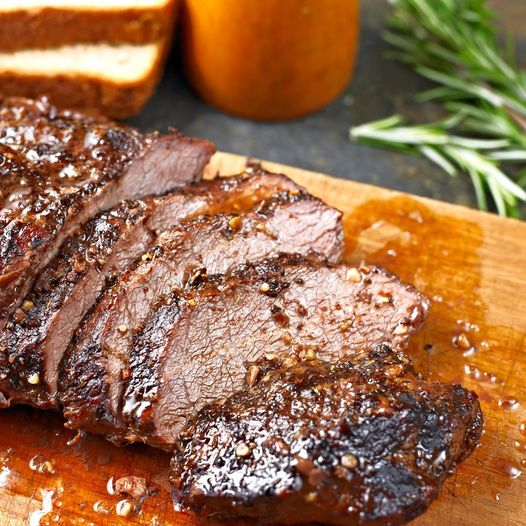

Grilled Viking Steaks

This barbecue is the real deal! True vikings cannot get enough of it!
Ingredients
- Oil: This top-rated steak marinade recipe starts with olive oil, which keeps the meat nice and moist;
- Sauces: You'll need Worcestershire sauce and soy sauce. Hot sauce is optional, but it's a great addition for people who appreciate a little heat;
- Lemon juice: The acidity from the lemon juice cuts through the other flavors, adding welcome brightness. The acid also helps tenderize the meat even further;
- Spices and seasonings: This flavorful marinade is seasoned with dried basil, garlic powder, dried parsley flakes, white pepper, and minced garlic.
How to cook
- Step: Season steaks generously on both sides with salt. Allow steaks to come to room temperature while you make the sauce;
- Step: Stir together demi-glace (see Cook's Note), mustard, Worcestershire sauce, tomato paste, and cayenne pepper in a bowl;
- Step: Heat oil in a skillet over very high heat, swirling carefully to evenly cover surface. When oil reaches a smoking point, transfer steaks to oil; add a few chunks of butter;
- Step: Sear meat on high heat until brown on each side, 2 to 3 minutes per side; keep them on the rare side. An instant-read thermometer inserted into the center should read 125 degrees F (52 degrees C). Transfer steaks to a warm plate;
- Step: Stir shallots into skillet; cook until softened, 2 to 3 minutes. Remove skillet from heat; pour in Cognac. Carefully ignite with a fireplace lighter. When alcohol burns off and flames go out, return skillet to high heat and bring to a boil; cook, stirring, a few minutes to reduce slightly;
- Step: Add demi-glace mixture, cream, and any accumulated juices from the steak. Cook on high heat just until sauce starts to thicken, 3 to 5 minutes. Transfer steaks back to pan and reduce heat to low. Gently simmer until meat is heated through and cooked to your desired level of doneness;
- Step: Transfer to hot plates and serve with a generous spoonful or two of sauce. Sprinkle with chives;
Return to main page
More recipes like this